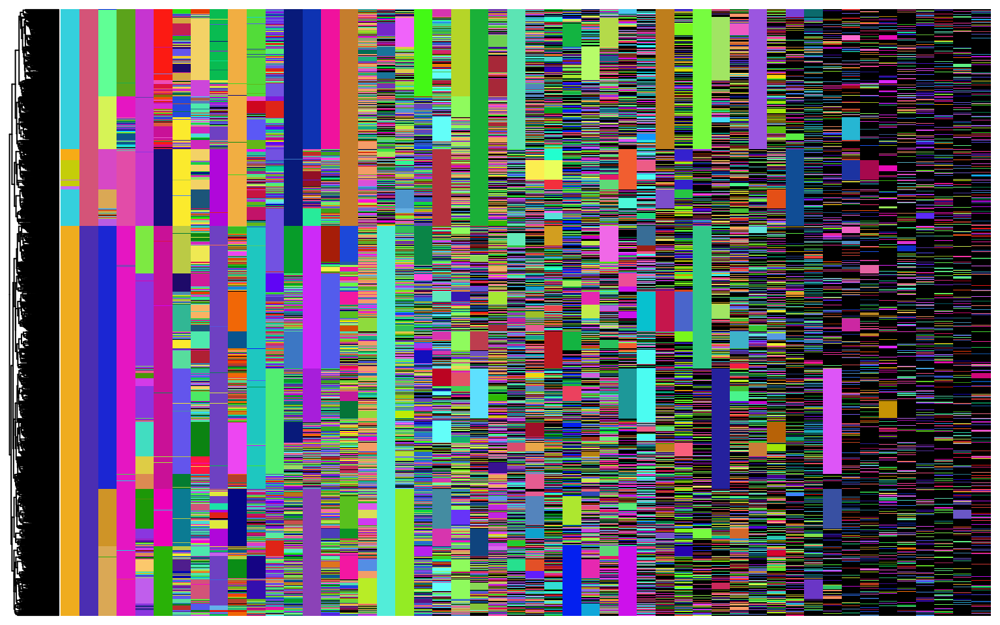
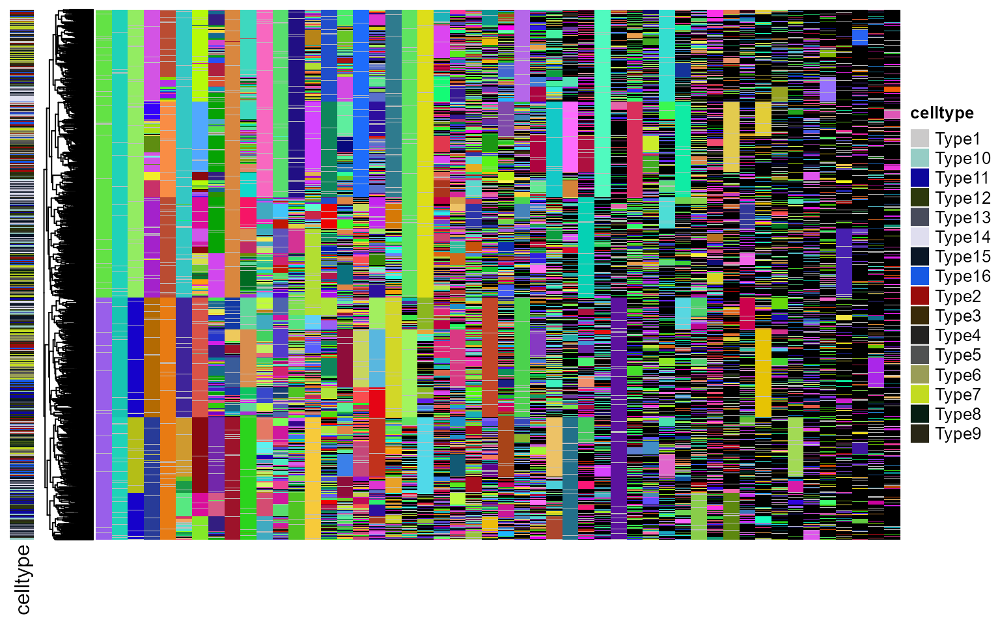

Basic tutorial on Quantitative Fate Mapping (QFM)
Weixiang Fang
basic_tutorial.RmdRead example data
In this example, we demonstrate quantitative fate mapping on lineage barcode data measured with cell types. First, we apply Phylotime to reconstruct time-scaled phylogeny from lineage barcodes. Second, ICE-FASE is applied to extract parameters of progenitor population dynamics, including commitment times, progenitor population sizes and commitment biases.
# read mutant allele matrix
cell_allele_table = readr::read_csv("../data/example/mutant_allele_matrix.csv")
cell_allele_table[1:5]## # A tibble: 1,600 × 5
## cell type Site_1 Site_2 Site_3
## <chr> <chr> <chr> <chr> <chr>
## 1 Type1_Cell1 Type1 Site1_Mut22 0 Site3_Mut28
## 2 Type1_Cell2 Type1 Site1_Mut102 0 Site3_Mut1
## 3 Type1_Cell3 Type1 Site1_Mut2 0 Site3_Mut1
## 4 Type1_Cell4 Type1 0 0 Site3_Mut1
## 5 Type1_Cell5 Type1 0 0 Site3_Mut84
## 6 Type1_Cell6 Type1 0 0 Site3_Mut1
## 7 Type1_Cell7 Type1 0 0 Site3_Mut8
## 8 Type1_Cell8 Type1 Site1_Mut4 0 Site3_Mut13
## 9 Type1_Cell9 Type1 Site1_Mut22 0 Site3_Mut28
## 10 Type1_Cell10 Type1 Site1_Mut22 0 Site3_Mut28
## # … with 1,590 more rowsRunning Phylotime
The input to Phylotime is a character matrix, with rows corresponding to cells and columns corresponding to barcoding sites, tibble / data.frame are convert to a character matrix. The matrix needs to have rownames, which will be used as the names of the cells.
Within each barcoding site (column), the same character denotes a unique mutant allele. The unmutated allele needs to be coded as the character “0”. (zero) The user also needs to input the total amount of active barcoding time, which is the duration for which mutations are being actively generated.
Phylotime estimates mutation rate from data provided and assumes a uniform allele emergence probability by default. More on how to set user-defined mutation parameters when prior information is available.
By default, Phylotime uses future to parallel pairwise distance estimations, use plan to set up parallel method and number of workers. Alternatively, set ‘parallel=F’.
In this example, barcoding activates at 0.6 days, and samples are collected at 15 days.
chr_mat = as.matrix(cell_allele_table[-c(1:2)])
rownames(chr_mat) = cell_allele_table$cell
library(furrr)
plan(multisession, workers = 8)
tr = phylotime(chr_mat[, 1:50], t_total = 15. - 0.6)Now to visualize the reconstructed tree with the lineage barcodes:
plot_barcodes(chr_mat[, 1:50], tr, show_column_names = F)
To plot the reconstrcuted tree only:
plot_tr(tr,
end_alpha_terminal = 0.05,
edge_width_terminal = 0.02)Running ICE-FASE
Next, to apply ICE-FASE, we need, in additional, the terminal cell state classifications. This is provided as a named vector, where the name correspond to cell names. We can visualzie the tree with terminal cell states:
sc_celltypes = cell_allele_table$type
names(sc_celltypes) = cell_allele_table$cell
print(sc_celltypes[1:10])## Type1_Cell1 Type1_Cell2 Type1_Cell3 Type1_Cell4 Type1_Cell5 Type1_Cell6
## "Type1" "Type1" "Type1" "Type1" "Type1" "Type1"
## Type1_Cell7 Type1_Cell8 Type1_Cell9 Type1_Cell10
## "Type1" "Type1" "Type1" "Type1"
plot_barcodes(chr_mat[, 1:50], tr, tip_celltype = sc_celltypes, show_column_names = F)To run ICE-FASE: (‘root_time’ is the time until barcode activation.)
res = ice_fase_mod(tr, sc_celltypes, total_time = 15 - 0.6, root_time = 0.6)ICE-FASE results
With ICE-FASE fitted, a number of progenitor states are identified as nodes in the fate map topology. We can plot the reconstructed fate map topology with commitment times now. Note that the inferred progenitor states (iP) are denoted as “Node-x” below.
plot_gr_clean(gr = res$gr,
total_time = 15,
gr_node_time = res$gr_trans_time,
type_col = res$col_pal,
show_node_label = T)To visualize the internal node state assignment in reconstructed phylogeny:
plot_tr(res$tr,
node_types = res$tr_node_assign,
type_col = res$col_pal,
end_alpha_terminal = 0.05,
edge_width_terminal = 0.02)To visualize distribution of Inferred Commitment Event (ICE) times:
plot_ice_times(res)## Warning: It is deprecated to specify `guide = FALSE` to remove a guide. Please
## use `guide = "none"` instead.
To visualize progenitor population sizes:
plot_node_sizes(res)## Warning: It is deprecated to specify `guide = FALSE` to remove a guide. Please
## use `guide = "none"` instead.
Finally, we can get a summary table for the progenitor state estimates:
output_estimates(res)## # A tibble: 15 × 9
## progenitor_state commitment_time population_size downstream_state1
## <chr> <dbl> <dbl> <chr>
## 1 Node-1 2.37 13 Node-2
## 2 Node-2 5.03 149 Node-9
## 3 Node-3 2.92 23 Node-4
## 4 Node-4 5.08 95 Type6
## 5 Node-5 3.85 73 Node-6
## 6 Node-6 5.50 101 Type7
## 7 Node-7 4.92 159 Type16
## 8 Node-8 5.74 239 Type15
## 9 Node-9 6.38 124 Type3
## 10 Node-10 5.92 133 Type2
## 11 Node-11 6.34 280 Type14
## 12 Node-12 6.66 267 Type12
## 13 Node-13 6.66 214 Type13
## 14 Node-14 6.97 182 Type9
## 15 Node-15 6.98 117 Type11
## # … with 5 more variables: downstream_size1 <dbl>, downstream_state2 <chr>,
## # downstream_size2 <dbl>, commitment_bias1 <dbl>, commitment_bias2 <dbl>